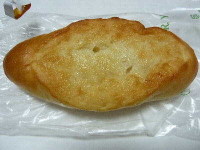
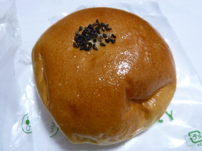
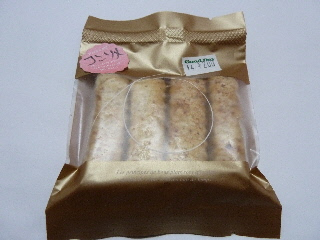
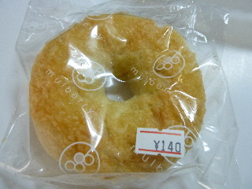
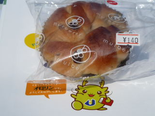

マルベリーのはちみつシュガー
2017/02/15

いい焼き色ですよね。
見た目でなんとなくフランスパンのような固いパンを想像するんですが、このパンはやわらかいです。
思ってたパンと違ったので、なんか不思議な感じがしました。
ふんわりやわらいのもいいですね。
島根県出雲市斐川町学頭1625-4
2017/02/15

いい焼き色ですよね。
見た目でなんとなくフランスパンのような固いパンを想像するんですが、このパンはやわらかいです。
思ってたパンと違ったので、なんか不思議な感じがしました。
ふんわりやわらいのもいいですね。
2016/02/17

スーパーでどのパンを買うか色々見たんですが、今日はこのあんパンが一番美味しそうに見えました。 餡が甘かったです。
牛乳を飲みながら食べたんですが、よく合いますね。
次食べる時も牛乳を用意しようと思いました。
2013/12/21

コンソメ味のパイってあるんですね。
初めてかも。
金色のパッケージでとっても高級感のあるお菓子です。
コンソメとチーズ味が効いてて、美味しいスナックパイになっていました。
小さいパッケージで200円なので、ちょっと贅沢な商品ですね。
美味しい飲み物と一緒にいただきたいです。
2013/11/04

こうゆうチーズベーグルもあるんですね。
とっても美味しそうです。
見た目ベーグルっぽくないんですが、食べてみると味も食感もしっかりベーグルでした。
2010/10/17

島根県立大学短期大学部出雲キャンパスの文化祭「第16回つわぶき祭」で買いました。
甘くて美味しかったです。シナモンとレーズンの組み合わせは美味しいですね。
新商品らしいです。
2006/7/8
道の駅湯ノ川に行ったら、まるべりーのラスクといりすの丘のラスクが売ってて、どっちを買おうか迷ったんですけど、大きさが小さくてお気軽に買えるまるべりーのラスクを選びました。いりすの丘のラスクは次に行ったら買おうと思います。
アーモンドラスクってことで、ラスクの上にアーモンドとカラメルがのってるので、しっかり甘いお菓子になってます。
よくお土産でいただく、葉っぱの形をした感じのアーモンドのお菓子に似た味で、それがラスクになった版です。
ちょっとレモン味がして、爽やか感がUPしてて食べやすいですね。